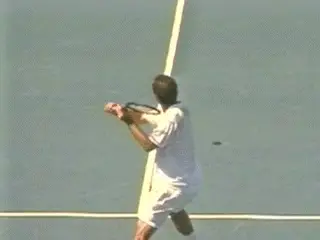
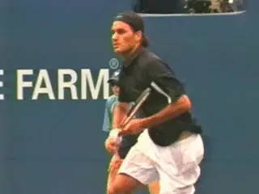
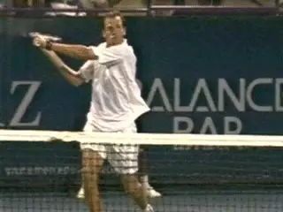
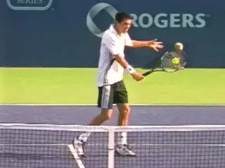
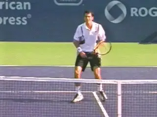
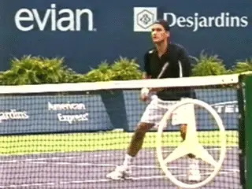
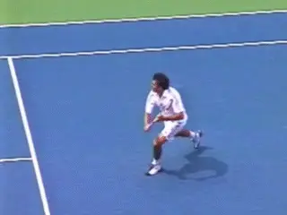
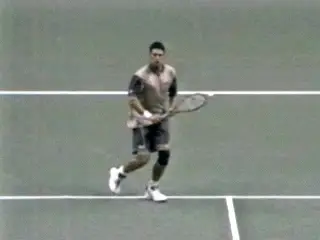
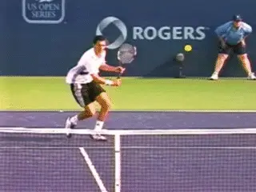
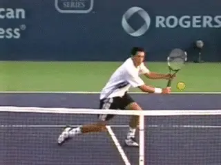

The Backhand Volley: Variations¶
John Yandell¶

Different heights, different levels of spin, different directions. How?
In the last article, we used high speed video from Advanced Tennis Research to break down the backhand volley of top players into its component parts. We also contrasted these basic components to those in the forehand volley, and saw the key similarities and differences. link
Now let's look at the full range of backhand volley variations: high volleys, low volleys, volleys hit with different levels of spin and pace, and volleys hit in different directions. Let's see how the top players put all the parts together, and what combinations they use when.
Reviewing the Components
First let's review the basic components. We saw that on the backhand volley--like the forehand volley and the groundstrokes--the preparation begins with the feet and torso, turning the body sideways, and at the same time, starting the movement of the racket. On the backhand volley this turning motion continues until the line of the shoulders is 60 to 90 degrees to the net, depending on the ball.

The hitting arm position, the backswing, and backward rotation of the hitting arm structure.
Early in the motion, the players set up the hitting arm position. This fundamental shape resembles an Open U[. The forearm forms the base, and the upper arm and the racket form the legs, both angled at roughly at 45 degree angle to the forearm.]
[We also saw that the backswing on the backhand volley was complex, involving three distinct movements. The first is the movement of the U shape further backward. The second movement is either upward or downward depending on the level of the ball.]
[The third movement is the rotation of the entire U shape backwards from the front shoulder joint.] When this happens the hitting arm structure tilts back as a unit opening the angle of the racket face. This angling of the racket face is the prerequisite for creating underspin. This is especially important to understand on the backhand volley because as we saw there is often substantially more underspin compared to the forehand. (link.)

The forward swing can start from many different positions.
Myriad Combinations
All these factors can be combined in a myriad of ways. The way players intermingle them in varying degrees on different balls creates a lot of confusion about what actually happens on the backhand volley. As we saw with the forehand, there is no such thing as one variation. It's all situational. Players will often hit balls from similar positions on the court at similar heights using different combinations of the various components.
The amount of additional backswing can vary tremendously, as can the amount of backward rotation of the hitting arm structure. The backswing can be minimal with the racket almost straight up and down and very little tilt. Or the hand can be at the top of the head and the backward rotation of the hitting arm structure can tilt the racket back until the tip is actually pointed downward toward the court.
What all this means is that the forward swing can start with the racket in many different positions. Furthermore, from these various starting points, the forward swing can be relatively flat, or very sharply downward, or anywhere in between.

The motion of the hitting arm is driven forward from the shoulder.
So the racket head can come through the contact on a wide variety of paths and at a wide variety of angles.
Finally there is the issue of elbow extension. Often the players straighten the arm out completely in the forward swing so the shape of the hitting arm moves from a U to more of an L shape. Other times they don't, or they straighten it only partially. Or the arm straightens just briefly around contact, then reverts to the U shape in the followthrough.
Hitting Arm and Racket Structure
So that is truly complex, but there is one constant that is critical to the forward swing. This is the shape and structure of the hitting arm and racket. As with the forehand volley this is one of the most important, and often overlooked components in the motion.
Equally important, on all the backhand volleys, the players use the front shoulder muscles to move the hitting arm structure forward and through the contact as a unit. Even though the internal shape of the hitting arm can flex somewhat, it is still driven forward through the shot in a unitary fashion. So the forward motion of the hitting arm from the shoulder is critical in all the variations, no matter where the forward swing starts from, higher or lower, more or less tilt, etc.

A high volley with minimal backswing and minimal backward tilt.
Now let's look at what happens on specific volleys and how the players combine all the elements.
High Volleys
You might assume that when the ball is high the players would use more backswing, open the face more, hit more downward on the ball, and generate more underspin. And on most balls that is probably true. But not all. So it's important to see that depending on the ball and court position there are options. As a player you need to develop a feel for what they are.
Contrast the two high Tim Henman volleys in the animations. In the first animation on a high, relatively slow floating ball with the court open, Henman keeps the racket face almost vertical.
Note that he raises the hitting arm and racket to the height of the ball, but there is very little additional backward movement, and also, little backward tilting of the racket face. He simply brings the hitting arm structure forward and slightly downward to contact with a minimum of underspin.
Now contrast this to the second high ball. Tim is moving more forward and the ball is obviously traveling much faster. On this second volley you see a much more extreme backswing. Watch as he raises his hand up virtually to the top of his head.
Another high ball with a full backswing and extreme tilt.
You also see extreme backward rotation of the hitting arm structure. Again this is to open the face. Because of this tilting, the tip of the racket extends backwards well behind the body. But look closely at the hand. It has gone backward only to about the rear edge of the torso.
Notice that this tilting is so extreme that the tip of the racket actually ends up pointing at an angle downward toward the court. But now notice another critical component. At this most extreme point in the backswing, the hitting arm shape, or the Open U, remains virtually in tact.
Now watch what happens in the forward swing. The torso stays almost perfectly sideways. The hitting arm structure rotates forwards. But the hitting arm and racket also move forward and sharply downward as a unit from the shoulder. The contact point, despite the length of the backswing, is still in front of the plane of the body. This is probably one of those 2000rpm plus volleys in terms of the spin.
Watch the elbow straighten out as the hitting arm structure comes forward. But then see it naturally revert to the U shape in the followthrough. Note also the beautiful opposition of the back arm. This keeps the torso sideways and also contributes to the balanced landing.

Extend the motion further and you have a backhand overhead.
Backhand Overhead
Push all these elements just a bit further, and you have the backhand overhead.
Watch the animation of Federer. Again the motion starts with the unit turn and creation of the hitting arm shape. Now the hand takes the hitting arm and racket upward and backward even higher than in the Henman high volley, reaching slightly above head level. There is tremendous backward rotation of the hitting arm structure from the shoulder. Note the tip is actually pointing down toward the court at about a 45 degree angle.
And again watch the forward motion. [Watch the hitting arm rotate forward over 90 degrees to the contact. The angle of the swing plane is still forward, but it is also angled radically downward. Again the player is using the front shoulder muscles to move the racket forward and downward at the same time. The actual path is a blend of these two diagonals. It's an amazing technical shot.]
So there we have the extremes. High balls hit virtually flat with minimal backswing and minimal backward rotation of the hitting arm structure. And high balls hit with tremendous additional backswing, extreme arm rotation and great underspin.
Between these extremes, if we look at pro volleys, we see every other possible combination as well. It all depends on the incoming ball, the court position, and the type of shot the volleyer chooses. The commonalities are the unit turn, the hitting arm structure, and the movement of the hitting arm structure forward from the shoulder joint. The variables are racket height, backward rotation of the hitting arm structure and the related angle of the racket face, and the downward angle of the swing plane.

A tough low volley with minimal backswing and only a slightly open face.
Low Volleys
When we turn to the low volleys, we see all the same elements, again combined in a range of different ways. Like the high volleys, the low volleys can be hit relatively flat, or with significant underspin, depending on the situation.
Look first at the incredibly difficult low volley hit by Taylor Dent, literally 6 inches or so off the court surface. Note the unit turn and the hitting arm shape, but also the restricted backswing and the relatively flat racket face.
Taylor has gone down as far he possibly can from the knees. The ball is so low however, that to reach it, he also has to bend over significantly from the waist.
To reach the actual contact point, he also lowers the hitting arm structure to just above court level. This includes straightening out the elbow into the L shape to get the racket to the level of the ball.
Note the relative lack of backward rotation of the hitting arm structure. This means that the racket face is only slightly open. He is hitting with a relatively small amount of spin, with the trajectory of the ball being angled upward to clear the net.
[Despite these adjustments to deal with the height of the ball, the driving motion is still the movement of the hitting arm structure forward from the shoulder. It's just that there is less backswing and less backward tilt.] You can clearly see the spacing between the hitting arm and the torso increase as the racket moves forward in the few frames just before and after contact.

A knee high volley with more backswing and racket tilt.
Now compare that to another low volley from Mark Philippoussis. The contact point here is higher than Taylor's, at about knee level. Here we can see the other extreme in terms of the backswing, and especially the rotation of the hitting arm structure backwards. [Look how Mark rotates the arm and racket back in his shoulder joint as a unit] opening the racket face. We can see that the face is virtually parallel to the court.
This variation allows him to hit through the ball with substantial underspin. From where he is the trajectory can be a little flatter, so he is probably hitting it somewhat harder than Taylor's volley with more spin.
The common point to note is that the forward swing is still the independent, unitary movement of the hitting arm structure from the front shoulder. Watch the arm and racket move forward while the torso stays sideways, and the back arm opposing. Note also that once again the elbow straightens out, but then reverts to a flexed position, recreating the U shape during the followthrough.

The U Shape turns literally upside down at times to position the racket.
Change of Direction
Now that we understand the role of the hitting arm on the backhand volley and how it moves through the contact as a unit from the shoulder, we can make sense of the wide range of swing patterns we see when the players change the direction of the shot.
Sometimes this movement is directly forward from the shoulder and is easy to see and understand. This happens on relatively easy shoulder high balls. But those are rare in pro tennis. More often players must alter both the height and the angle of the racket face. They do this by turning the entire hitting arm structure counterclockwise.
This rotation--which is distinct from the backward tilt--can be a matter of a few degrees, but at times the players literally turn the racket head upside down, rotating it 180 degrees or more, in order to position it behind the ball and move it through the contact. Unless you understand what you are looking for these movements can be extremely difficult to understand.
We can see clearly how this works on two similar low volleys hit by Tim Henman. The first one is hit crosscourt, and the second is hit down the line, or actually slightly inside out, from the center of the court outward, toward the opponent's forehand corner.

Watch the U Shape turn over 90 degrees on the down the line volley.
Watch in the crosscourt volley how Henman starts with the Open U shape with the forearm basically parallel to the court. As he moves the racket forward, however, he turns it literally upside down. Watch the tip of the racket. It goes from pointing upward at the sky to pointing directly downward at the court. So the angle has rotated 180 degrees in a few fractions of a second. And this is happening simultaneous with the forward movement!
This only makes sense if you see it in the context of the unitary hitting arm structure. Henman rotates the entire shape to position the racket head behind the line of the shot. [At the same time the hitting arm and racket are rotating, Henman is moving them forward, as always, by using the front shoulder.] [Notice that the racket face ends up pointing more or less directly in the direction of the shot.]
You can see exactly the same principle at work on the second down the line volley. The rotation is just less extreme. The racket tip starts pointing upward and drops as he rotates the hitting arm structure. It goes from pointing straight up to pointing basically straight down, a change of about 90 degrees. Again, this positions the racket head to move through the ball and create the line of the shot. And again the racket head ends up facing in the direction of the hit.

It all makes sense once you understand the role of the hitting arm.
These may seem like radical adjustments, but they are actually much easier to make than they may appear once you understand the dynamics of the forward swing. If you visualize [the hitting arm and racket as a structure that doesn't really change its internal shape], then you will instinctively feel [how to maneuver this structure from the shoulder in order to position the racket head. By rotating as a unit you can position it to make any possible placement on the court. You can rotate it, move it forward, and move it downward all at the same time--and you need to if you want to hit the backhand volley.]
Work to develop the basic elements outlined in the first article and then experiment with combining them to create the shot variations. If you learn to set up the magic hitting arm position and then learn how to maneuver it to create spin and deal with balls with different heights, speeds and spin you'll develop a solid backhand volley and have the confidence to hit it under pressure.
Next: Footwork: do I step into the volley--or not? If so, when and how? Can I hit it the volley open stance and do I want to? Do I split step or not? What is a split step anyway? Let's take a look at all those questions on the pro volley next time.

John Yandell is widely acknowledged as one of the leading videographers and students of the modern game of professional tennis. His high speed filming for Advanced Tennis and TPA have provided new visual resources that have changed the way the game is studied and understood by both players and coaches. He has done personal video analysis for hundreds of high level competitive players, including Justine Henin-Hardenne, Taylor Dent and John McEnroe, among others.
In addition to his role as Editor of TPA he is the author of the critically acclaimed book Visual Tennis. The John Yandell Tennis School is located in San Francisco, California.